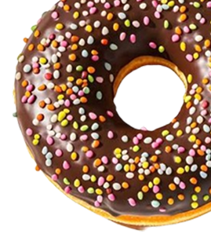

Sobre Nós
Um sonho que
Um sonho que
nasceu na cozinha.



A Doce Rush nasceu do desejo de levar aquele cheirinho irresistível de bolo recém-saído do forno para mais pessoas. O que começou em uma cozinha cheia de potes, ideias e receitas de família se tornou nosso lugar favorito para criar.
Hoje, seguimos preparando cada doce com o mesmo cuidado do primeiro dia: ingredientes selecionados, muito carinho e uma pitada generosa de alegria.